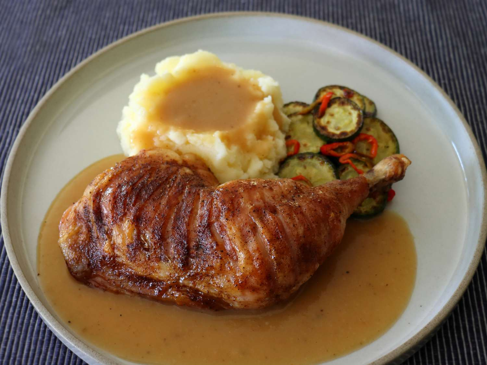

Tiger Chicken

Description
An Asian chicken dish that consists of roasting chicken leg quarters to produce a crispy skin yet juicy,
seasoned meat.
Ingredients
- 1 1/2 teaspoons kosher salt
- 1/2 teaspoon freshly ground black pepper
- 1/2 teaspoon garlic powder
- 1/4 teaspoon chipotle chili powder
- 1/4 teaspoon baking powder
- 4 chicken leg quarters, with skin
- 2 tablespoons all-purpose flour
- 1 1/3 cups chicken bone broth
- salt and freshly ground black pepper to taste
- 1 pinch cayenne
- 1 sprig any fresh herb (optional)
Steps
-
For seasoning salt, combine salt, black pepper, garlic powder, chipotle chili powder, and baking soda in a small bowl. Stir together thoroughly, and set aside.
-
For tiger cut chicken, lay a leg quarter, skin side up, on a cutting board. With a sharp knife, begin halfway up the chicken leg, and make cuts through the skin to the bone, every 1/4 -inch. Make these parallel cuts all the way to the end of the thigh. Repeat with remaining leg quarters.
-
Line a baking sheet with parchment paper, and place the chicken, skin side down, on the prepared baking sheet. Sprinkle surface with 1/2 of the seasoning salt. Turn legs over and sprinkle the remaining seasoning salt on the skin side, distributing it evenly over the entire surface.
-
Refrigerate chicken legs on the baking sheet, uncovered, to dry out overnight.
-
Preheat the oven to 450 degrees F (235 degrees C). Set a rack in the upper center of the oven.
-
Roast chicken in the preheated oven until skin is crispy, chicken is no longer pink at the bone, and juices run clear, about 45 minutes. An instant read thermometer inserted into the thickest part of the thigh should read 165 degrees F (74 degrees C).
-
Remove chicken to a plate; keep chicken warm while preparing a pan gravy.
-
Scrape drippings from the parchment into a small skillet, and place over medium-high heat. Add flour, and stir continually with a whisk until flour begins to smell like baked pie crust, about 2 minutes.
-
Pour in chicken broth; whisk continuously, and bring sauce to a simmer to thicken. Adjust thickness by adding a little broth to thin, or by simmering a bit longer to thicken. Season with salt, black pepper, and cayenne. Toss in a sprig of any fresh herb and whisk for a minute more.
-
Add a spoonful of pan sauce to a plate and add chicken on top to serve.
Home